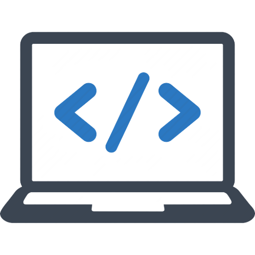

Primeiro Paragrafo - Desenvolvedores e Rick and Morty
Com o aumento do interesse em programação e desenvolvimento de software, muitos desenvolvedores estão buscando maneiras
de relaxar e se divertir após um longo dia de trabalho. Uma das séries de televisão que tem ganhado popularidade entre
os desenvolvedores é "Rick and Morty".
"Rick and Morty" é uma série animada de comédia e ficção científica criada por Justin Roiland e Dan Harmon. A série
segue as aventuras do cientista maluco Rick Sanchez e seu neto Morty Smith, enquanto eles viajam para outras dimensões
e exploram mundos estranhos e bizarros.
A série tem se mostrado popular entre os desenvolvedores devido ao seu humor inteligente, referências culturais e temas
filosóficos. Os desenvolvedores frequentemente se identificam com o personagem Rick, um cientista genial e egoísta que
busca a verdade e a compreensão do universo.
Além disso, a série também apresenta temas relacionados à tecnologia e ciência, como inteligência artificial, realidade
virtual, clonagem e viagem no tempo, o que pode atrair os desenvolvedores interessados nessas áreas.
Porém, é importante lembrar que a série também apresenta temas controversos e impróprios para menores de idade, como
violência, linguagem vulgar e conteúdo sexual. Por isso, é essencial que os desenvolvedores assistam a série de forma
responsável e consciente, levando em consideração os valores éticos e morais.
Em resumo, a série "Rick and Morty" tem se mostrado popular entre os desenvolvedores devido ao seu humor inteligente,
temas filosóficos e referências culturais. Porém, é importante que os desenvolvedores assistam a série de forma
responsável e consciente, levando em consideração os valores éticos e morais.
Imagens abaixo
Clique aqui para ir para o site do Google
Vamos para a Página 1?
Vamos para a Página 2?